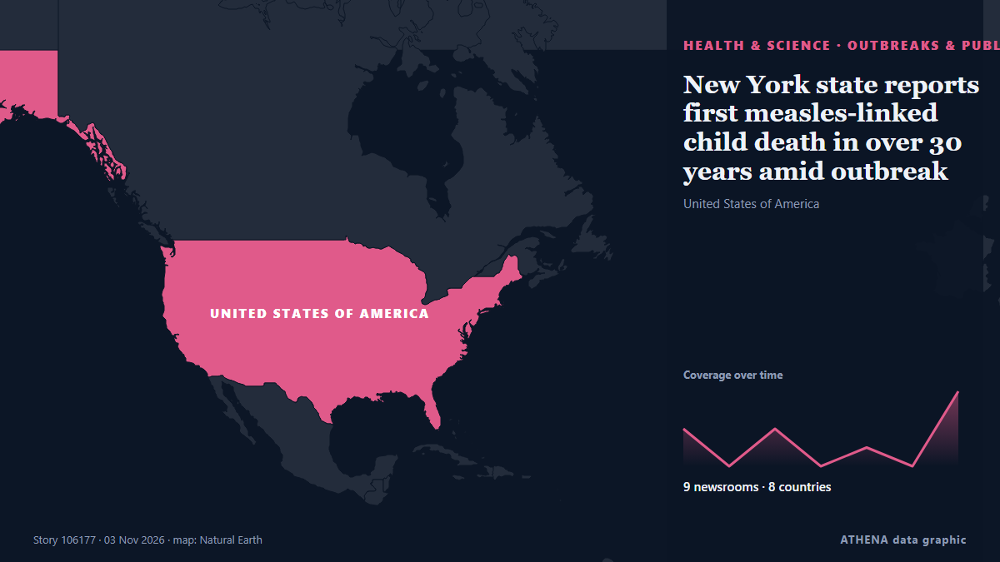

Salud, ciencia e investigación
PatrocinadoPresentado por  Cybernetics and Artificial Intelligence Lab Welcome to the Cybernetics and Artificial Intelligence Laboratory, established at the Department of Business Administration of the National
Cybernetics and Artificial Intelligence Lab Welcome to the Cybernetics and Artificial Intelligence Laboratory, established at the Department of Business Administration of the National
Los titulares se muestran en inglés, tal como se publicaron.

Brotes y salud públicaNew York state reports first measles-linked child death in over 30 years amid outbreak
The state's governor declared a state disaster emergency in October in response to the measles outbreak. de The Straits Times
| 21 oct | 40 |
|---|---|
| 22 oct | 81 |
| 23 oct | 76 |
| 24 oct | 36 |
| 25 oct | 45 |
| 26 oct | 84 |
| 27 oct | 80 |
| 28 oct | 79 |
| 29 oct | 90 |
| 30 oct | 83 |
| 31 oct | 45 |
| 1 nov | 32 |
| 2 nov | 71 |
| 3 nov | 5 |
Ethiopia attacks kill civilians as health system nears collapse, WHO chief says
The World Health Organization reports that attacks in northern Ethiopia are pushing the region's fragile health system closer to collapse. de ABC News (International)
Ebola outbreak kills more than 5,300 people in DR Congo
The Bundibugyo strain has spread to Kenya and Uganda, while two in Nigeria returned negative results. de Al Jazeera English
EU, UK aim to strike university tuition fee deal by May next year
The deal would guarantee equal treatment on tuition fees for EU students in British universities and UK students in the EU. de Euractiv
US inmate Christa Pike says she woke up 'confused and in pain' after failed execution
It is Pike's first public statement since she survived an execution attempt by lethal injection in September. de BBC News
US approves cheap version of HIV prevention shot
The approval was granted under the US FDA's President's Emergency Plan for AIDS Relief (PEPFAR) program, Dr. de Channels TV
NASA telescope is on the verge of plunging back to Earth after failed rescue mission
CAPE CANAVERAL, Fla. (AP) — An aging NASA telescope is barely clinging to space after a failed rescue effort left it tottering lower and lower. de The Canadian Press (via CityNews)
PM stresses timely completion, efficient management for Jinnah Medical Complex
ISLAMABAD: Prime Minister Shehbaz Sharif was informed on Monday that a 403-bed hospital under construction in the capital was expected to become operational by March 23, 2027, with 59 percent of the… de Business Recorder
WHO urged to review drinking water standards amid nitrate health fears
The toxic effects of nitrates are widely recognised as particularly dangerous for children and pregnant women. de The Straits Times
NFL-Lions report positive progress for linebacker Campbell after injury
Jack Campbell took a hard hit on his helmet from T.J. de Times of India
Birdsong shares surprising similarities with human speech, music
Scientists have long recognised that some songbirds produce sounds with patterns resembling human speech and music. de Daily News Egypt
The Long Hull: Karl Bushby reflects on perseverance & 'best of humanity' on his 28-year journey home
Ebola outbreak kills more than 5,300 people – Africa CDC
Africa's latest Ebola outbreak has killed more than 5,300 people, the vast majority of them in the Democratic Republic of Congo, according to the continent's top health agency. de Vanguard
Meteor showers to light up skies in November
"Even in the city, some of these meteors will be bright enough that you'll be able to see them." [ more › ]. de Gothamist (New York City)
Doctor in Germany on trial over sex abuse of over 70 children
The doctor was arrested roughly a year ago after the mother of a child reported suspected abuse to authorities. de IOL
Dutch police offer £1.6m reward for help finding cocaine kingpin on the run
Dutch prosecutors are offering a staggering £1.6million reward for any information leading to the arrest of Jos Leijdekkers. de The Independent
Colombia Offers 120 Healthcare Jobs in Spain With Permanent Contracts
Colombia has opened 120 healthcare jobs in Spain for doctors and nurses, offering permanent contracts and monthly salaries equivalent to approximately 8 million to 12 million pesos… de Colombia One
Kenya presses Saudi Arabia to lift Ebola travel restrictions
NAIROBI, Kenya – Kenya is expanding its overseas investment promotion network to the Middle East with plans to establish a dedicated office in Jeddah, Saudi Arabia, to attract foreign investment… de Capital FM Kenya
Health insurance plan costs on Healthcare.gov to rise by double digits in 2027
Obamacare enrollees could see their health insurance premiums rise by double digits for a second year in a row, according to a report published Friday. de The Hill
WHO Chief: Ebola Reminder of Urgent Need to Finish Pandemic Treaty
Deadly outbreaks like the Ebola epidemic raging in the Democratic Republic of Congo show the urgent need to complete an international pandemic treaty, the World Health Organization chief said Monday. de Vanguard
Connecticut senator Chris Murphy hospitalized after stroke
Democratic senator was at his son’s hockey game when he felt a numbness in his arm and was in Johns Hopkins Democratic US Senator Chris Murphy has been hospitalized after suffering a stroke. de The Guardian
NASA Telescope Set to Crash Back to Earth
It's gripping, clear and more informative than “NASA Telescope in Freefall,” while making it clear the re-entry is still expected. de News of Bahrain
Samples for two suspected Ebola cases in Nigeria turn out negative
Health authorities in Nigeria confirmed that samples from two suspected Ebola cases tested negative after two rounds of testing. de Arab News
Strange beaked 'hell chicken' is the first fruit-eating dinosaur
vInfernogallus, meaning "hell chicken", is named after its bird-like look and Hell Creek fossil site. de Express Tribune
BDK Organises Breast Cancer Awareness
Free Health Screenings Held for Attendees in Salmabad. de News of Bahrain
Ghana not adequately prepared for Ebola threat — Dr Kingsley Agyemang
The Member of Parliament (MP) for Abuakwa South, Dr Kingsley Agyemang, has raised concerns about Ghana’s preparedness to contain a possible Ebola outbreak, warning that inadequate border health… de MyJoyOnline
Samsung Built the Foldable First. Now Apple Wants the Creator Crowd
The next smartphone war is being fought one creator at a time. de Inc.
Britain shouldn’t apologise for slave trade; Africa profited — Kemi Badenoch
Speaking to broadcasters yesterday, Badenoch described slavery as an evil “in which people from every continent and region participated” de Vanguard
More than 5,000 die from Ebola in DR Congo’s deadliest outbreak
Government data shows that more than 10,000 people have contracted the rare virus. de BBC News
More than 1,500 people awaiting organ donation in Azerbaijan
Thessaloniki's George Papanikolaou Hospital ranks first in Northern Greece for organ donation as doctors highlight the process and its life-saving impact. de Greek City Times
Latvia to chair UN Security Council for first time in its history
Latvia will assume the rotating presidency of the United Nations Security Council for the first time in its history on November 1, serving in the role for one month, the country’s Foreign Ministry… de AzerNews
23:28 How Belarus hosted Oleshky evacuees: the humanitarian mission in detail Society
Preparations for the humanitarian mission to Oleshky are nearing completion: the designated routes have been cleared of mines, and the humanitarian convoy has been assembled and is ready to depart. de Ukrinform (English)
Dubai announces major new research and AI campus in Zabeel Park for 30,000 innovators
Dubai announces Nad Zabeel, a major research and AI campus in Zabeel Park, expected to attract over 30,000 participants annually to its programmes and events. de Arabian Business
Rajyotsava celebrated in Raichur
Minister recalls the century-long struggle to bring Kannada-speaking regions under a unified State. de The Hindu
Chong Wei: Making tough decisions for Malaysian badminton comes with criticism
KUALA LUMPUR: Former world number one Lee Chong Wei is prepared to face public criticism as he navigates the challenges of driving change in Malaysian badminton, insisting that difficult decisions… de New Straits Times